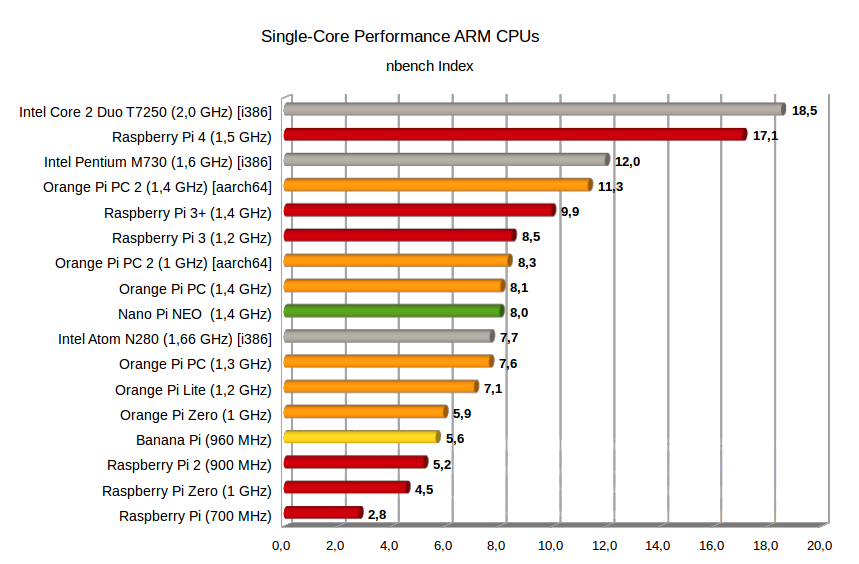

Eine interessante Kenngröße der vielen verschienen Einplatinencomputer-Varianten ist die Singlecore-Leistung der CPU. Eine Diagramm soll helfen die Prozessoren bzw. Produkte einordenen zu können …
Beschreibung
Der Raspberry B+ und Zero setzen noch auf den SoC (System-on-a-Chip) BCM2835 von Broadcom. Dieser enthält einen alten ARM11 Prozessorkern. Dadurch sind die Messergebnisse vom Raspberry Pi B+ mit Turbo Einstellung identisch zum Raspberry Pi Zero. Der Raspberry Pi 2 verwendet den SoC BCM2836 von Broadcom. Darin enthalten sind vier ARM Cortex-A7 Prozessorkerne. Der Raspberry Pi 3 verwendet den SoC BCM2837 von Broadcom mit einer Taktrate von maximal 1200 MHz. Der Raspberry Pi 3+ verwendet eine verbesserte Version des selben SoC mit der Bezeinchnung BCM2837B0. Er wird mit einem Heatspreader ausgeliefert und die Taktrate beträgt nun maximal 1400 MHz. Im SoC enthalten sind vier ARM Cortex-A53 Prozessorkerne.
Andere preisgünstge Einplatinencomputer wie der Banana Pi Pro und Orange Pi setzen auf SoCs von Allwinner. Der SoC A20 enthät 2 ARM Cortex-A7 Prozessorkerne, H2+ und H3 enthalten wie wie beim Raspberry Pi 2, vier ARM Cortex-A7 Prozessorkerne. Je nach Modell werden Taktraten von 1,2 bis 1,3 GHz, und sogar bis zu 1,5 GHz bei Übertaktung, unterstützt.
Neuere Orange Pi Einplatinencomputer setzt den Allwinner SoC H5 ein. Dieser hat wie der Raspberry Pi 3(+) vier ARM Cortex-A53 Prozessorkerne.
Für die Ermittlung der CPU-Singlecore-Leistung wurde das alte Testprogramm nbench verwendet. Auf der Homepage des Projekts sind viele Messergebnisse von anderen Systemen als Referenz verfügbar.
Zum Vergleich ein uralter Intel Pentium M Prozessor mit 1,6 GHz hat den Index 12. Ein Intel Atom N270 mit der selben Taktrate hat ungefähr den Index 7.
